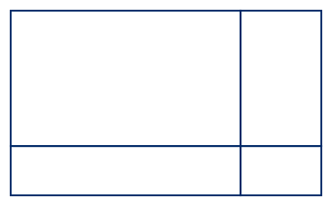

1. Problem 1: Multiplying Two-Digit Numbers.
Multiply without a calculator. When a part names a strategy, use that strategy.
(a)
Use an area model to find \(36 \times 24\text{.}\) Label the side lengths of each piece, write the partial product inside each piece, and then add the partial products.

A large rectangle split into four smaller rectangles. The vertical dividing line is closer to the right side, and the horizontal dividing line is closer to the bottom, so the upper left piece is the largest and the lower right piece is the smallest. No labels are given.
Answer.
Break \(36\) into \(30 + 6\) across the top and \(24\) into \(20 + 4\) down the side. The four pieces are
\begin{equation*}
30 \times 20 = 600, \quad 6 \times 20 = 120, \quad 30 \times 4 = 120, \quad 6 \times 4 = 24
\end{equation*}
Adding the partial products:
\begin{equation*}
600 + 120 + 120 + 24 = 864
\end{equation*}
(b)
Find \(36 \times 24\) again using a different strategy, such as breaking apart one factor or doubling and halving. Show each step.
Answer.
Breaking apart \(24\) into \(20 + 4\text{:}\)
\begin{equation*}
36 \times 24 = 36 \times 20 + 36 \times 4 = 720 + 144 = 864
\end{equation*}
Doubling and halving also works, since doubling one factor and halving the other keeps the product the same:
\begin{equation*}
36 \times 24 = 72 \times 12 = 144 \times 6 = 864
\end{equation*}
(c)
Use compensation to find \(49 \times 32\text{:}\) change one factor to a friendlier number, multiply, and then adjust. Explain why your adjustment makes sense.
Answer.
Round \(49\) up to \(50\text{:}\)
\begin{equation*}
50 \times 32 = 1600
\end{equation*}
Fifty groups of \(32\) is one more group than we want, so take one group of \(32\) back off:
\begin{equation*}
1600 - 32 = 1568
\end{equation*}
(d)
Check your answer to the previous part using a second strategy of your choice.
Answer.
Breaking apart \(32\) into \(30 + 2\text{:}\)
\begin{equation*}
49 \times 32 = 49 \times 30 + 49 \times 2 = 1470 + 98 = 1568
\end{equation*}
An area model with \(40 + 9\) and \(30 + 2\) gives the same result: \(1200 + 80 + 270 + 18 = 1568\text{.}\)